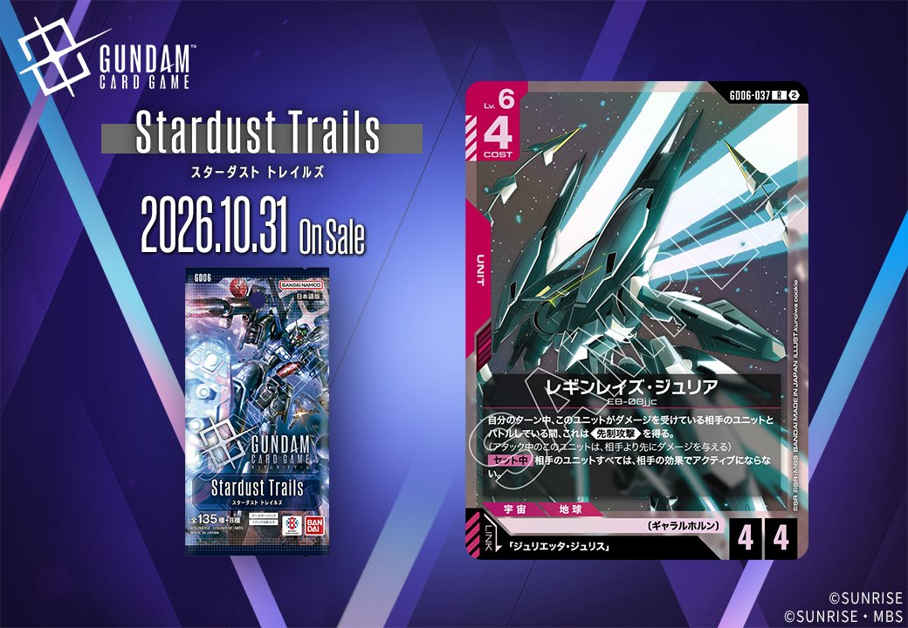
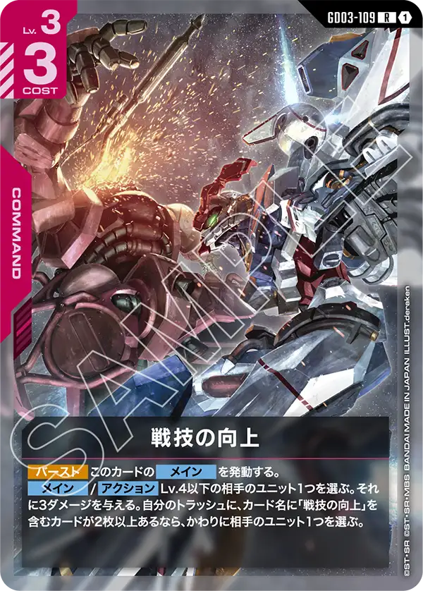
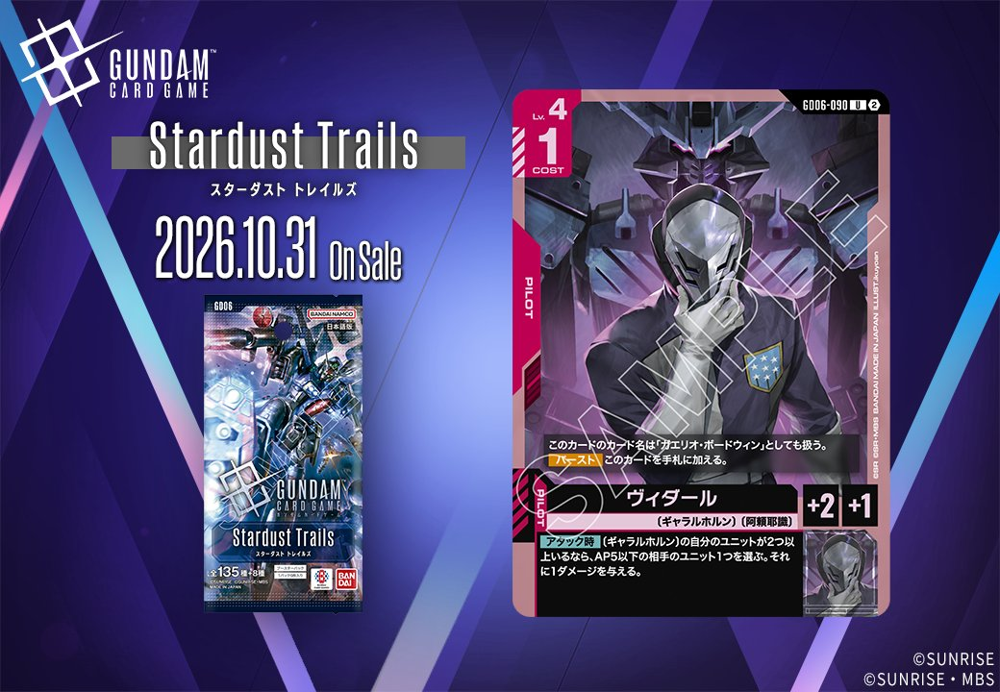
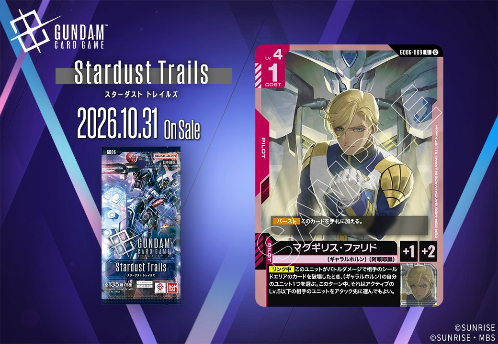

2026年10月31日発売のGD06から、新カード2枚を紹介します。いずれも赤のカードで、一方はCOMMANDの「鋼の忠誠」（GD06-111）、もう一方は「ジュリエッタ・ジュリス」をリンク条件に指定するUNIT「レギンレイズ・ジュリア」（GD06-037）です。
鋼の忠誠 (GD06-111)
| 色 | 赤 | タイプ | COMMAND |
| Lv | 5 | コスト | 1 |
| パイロット | ジュリエッタ・ジュリス（補正 AP+2 / HP+1） 〔ギャラルホルン〕 | ||
効果: 【アクション】自分のトラッシュに〔ギャラルホルン〕のカードが4枚以上あるなら、相手のユニット1つを選ぶ。それに2ダメージを与える。
鋼の忠誠は、コスト1で相手のユニット1つに2ダメージを与える赤のコマンドです。使えるタイミングは【アクション】のみで、自分のトラッシュに〔ギャラルホルン〕のカードが4枚以上あることが条件になります。同じく2ダメージを与える格闘戦（採用率16.1%）やダークネスフィンガー（15.8%）は【バースト】と【メイン】も持っていますが、本カードにはありません。Lv.5の要求とトラッシュの枚数条件が重なるため、序盤に撃つのは難しいでしょう。条件さえ満たせば相手のターンにもコスト1で除去を差し込めるので、〔ギャラルホルン〕のカードを多く採用するデッキで、中盤以降に使う除去札になります。

レギンレイズ・ジュリア (GD06-037)
| 色 | 赤 | タイプ | UNIT |
| Lv | 6 | コスト | 4 |
| AP | 4 | HP | 4 |
| 特徴 | 〔ギャラルホルン〕 | ||
| リンク条件 | 「ジュリエッタ・ジュリス」 | ||
効果: 自分のターン中、このユニットがダメージを受けている相手のユニットとバトルしている間、これは《先制攻撃》を得る。(アタック中のこのユニットは、相手より先にダメージを与える)【セット中】相手のユニットすべては、相手の効果でアクティブにならない。
レギンレイズ・ジュリアはLv.6・コスト4、AP4/HP4の赤のユニットで、特徴は〔ギャラルホルン〕、リンクは「ジュリエッタ・ジュリス」です。自分のターン中、ダメージを受けている相手のユニットとバトルしている間は《先制攻撃》を得ます。格闘戦やダークネスフィンガーで2ダメージ、戦技の向上で3ダメージを先に与えておけば、その後のアタックでこの条件を満たせます。AP4で先にダメージを与えられるため、残りHPが4以下の相手からは反撃を受けずに倒せるでしょう。【セット中】は相手のユニットすべてが相手の効果でアクティブにならなくなり、レスト状態の相手を起こされずに済みます。
関連カード
-
 資源衛星パラオ(GD01-128)赤系デッキ内採用率19.5% (1677デッキ)
資源衛星パラオ(GD01-128)赤系デッキ内採用率19.5% (1677デッキ) -
 格闘戦(ST03-013)赤系デッキ内採用率16.1% (1384デッキ)
格闘戦(ST03-013)赤系デッキ内採用率16.1% (1384デッキ) -
 機体奪取(GD05-111)赤系デッキ内採用率16% (1380デッキ)
機体奪取(GD05-111)赤系デッキ内採用率16% (1380デッキ) -
 ダークネスフィンガー(GD05-110)赤系デッキ内採用率15.8% (1362デッキ)
ダークネスフィンガー(GD05-110)赤系デッキ内採用率15.8% (1362デッキ) -

戦技の向上(GD03-109)赤系デッキ内採用率10.8% (927デッキ) -

ヴィダール(GD06-090)NEW赤系 — 同色・共通特徴: ギャラルホルン（新カード） -
ガンダム・ヴィダール(GD06-036)NEW赤系 — 同色・共通特徴: ギャラルホルン（新カード）
-
レギンレイズ(ジュリエッタ機)(GD06-043)NEW赤系 — 同色・共通特徴: ギャラルホルン（新カード）
-
ガンダム・キマリスヴィダール(GD06-038)NEW赤系 — 同色・共通特徴: ギャラルホルン（新カード）
-

マクギリス・ファリド(GD06-089)NEW赤系 — 同色・共通特徴: ギャラルホルン（新カード）